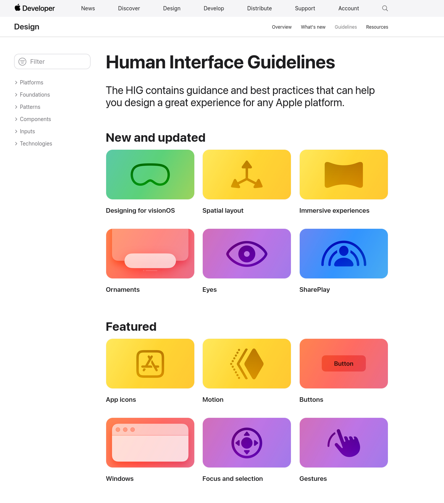

User Interface Design
INF 133 User Interaction Software
Week 8
Goals for Today
By the end this lecture, you should be able to...
- Differentiate approaches to developing mobile interfaces
- Describe the major components of Fitts’s Law
- Explain how Fitts’s Law impacts how interfaces should be designed
Weiser'sUbiquitous Computing
- Mostly lines up with what we use today:
- Tabs: phones and watches
- Pads: tablets and laptops
- Boards: projectors? smart TV's?, AR/VR?
Design for Ubiquitous UI
- Graceful degradation vs. progressive enhancement
Mobile-first design
Mobile-first Design
- Plan your design for mobile
- Then make your app better as screen real estate increases
- Add more features
- Improve navigation to those features
Mobile-first Design
- What mobile design strategies have you observed?
-
- Same content, organized in order
- Stack content vertically
- Show navigation on demand
- Larger interactive targets
Mobile-first Design
- Not mobile-only!
- Mobile UI to desktop creates inefficiencies
- Ex. extra clicks to navigate
- Ex. underutilized real estate
Go beyond making everything bigger! Enhance your design!
Mobile-first Design
- Start with the experience
- Critical factors:
-
- Initial impression (boot up/start screen)
- User interface
- Visual design
- Information architecture
- Physical device and its use by the app
Mobile-first Design
- A useful initial view
-
- Give users clear calls to action
- Place useful content on the homepage (not just navigation)
- Make it easy to get back home
Mobile-first Design
- Support mistakes (the "uh-oh" button)
-
- Accept that buttons and functions will be pressed by mistake!
- Make 'undo' and 'redo' intuitive
- Make navigating back intuitive
Mobile-first Design
- Error prevention
-
- Accept that input (especially on small devices) is difficult
- Add assistance to aid input where possible
- Add input checks (phone, credit card, etc)
- Use appropriate widgets
Ultimately, adhere as closely as possible to platform conventions!
(why?)
Users should not have to wonder whether different words, situations, icons, or actions mean the same thing
Users should not have to remember app-specific navigation
Apple Human Interface Guidelines
Website

Fitts's Law (1954)
Psychologist Paul Fitts developed mathematical description to measure difficulty of hand to object acquisition
(switch decks!)
Activity
Pair up and test your pointing skills
Fitts's Law Demo
Run the demo, once per person in your group.
Take a screenshot of your results, submit along with some notes about how Fitts's Law might influence your design
NOTE: You'll turn this in at the end of class